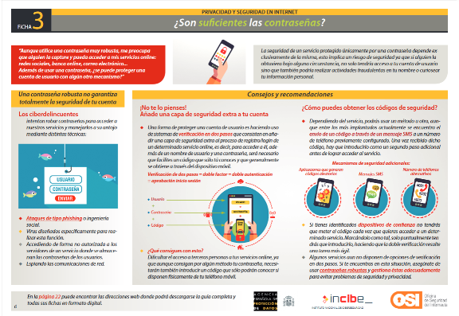

Hemos aprendido que debemos generar contraseñas robustas, no usar la misma en diferentes servicios y además es aconsejable cambiarlas periódicamente.
Para no tener que memorizar todas las contraseñas que necesitamos, existen programas que nos pueden ayudar a recordarlas y además que cumplen con todos los requisitos necesarios para que la contraseña sea segura y robusta.
Reciben el nombre de gestores de contraseñas y su funcionamiento es muy sencillo, tan sólo deberemos recordar una contraseña maestra de acceso al gestor que será la llave de acceso al resto de tus contraseñas. Por lo que deberemos tener en cuenta las siguientes consideraciones:
- La contraseña maestra que utilicemos para acceder debe ser segura y robusta ya que será la que nos dé acceso al resto de claves.
- Si olvidamos esta clave no podremos acceder al resto de nuestras contraseñas, por tanto, debemos memorizarla bien en nuestras cabezas.
- Debemos realizar copias de seguridad del fichero de claves, para evitar perder las claves almacenadas.
En el siguiente vídeo puedes aprender cómo usar un gestor de contraseñas.
Vídeo: «Cómo utilizar un gestor de contraseñas»
Fuente: OSI-INCIBE
En la sección de herramientas gratuitas de la Oficina de Seguridad del Internauta podrás encontrar varios gestores de contraseñas. Si vas a utilizar un gestor de contraseñas, te recomendamos utilizar algunos de estos.
Infografía: «¿Son suficientes las contraseñas?»

Para verla mejor clica aquí.
Fuente: Guía de Privacidad y seguridad en Internet (OSI / AEPD)
Consejos para evitar riesgos derivados de una mala gestión de las contraseñas
- No compartas tus contraseñas con nadie. Si lo haces, dejará de ser secreta y estarás dando acceso a otras personas a tu privacidad.
- Asegúrate de que son robustas. Están formadas por al menos 8 caracteres: mayúsculas, minúsculas, números, caracteres especiales. Utiliza alguna regla mnemotécnica para recordarlas.
- No utilices la misma contraseña en diferentes servicios. Siempre claves diferentes para servicios diferentes.
- Cuidado con las preguntas de seguridad. Si las utilizas, que sólo tú y nadie más sepa las respuestas.
- Utiliza gestores de contraseñas. Si te cuesta memorizar las contraseñas o utilizas muchos servicios, apóyate en estos programas, son muy útiles y sencillos de manejar.